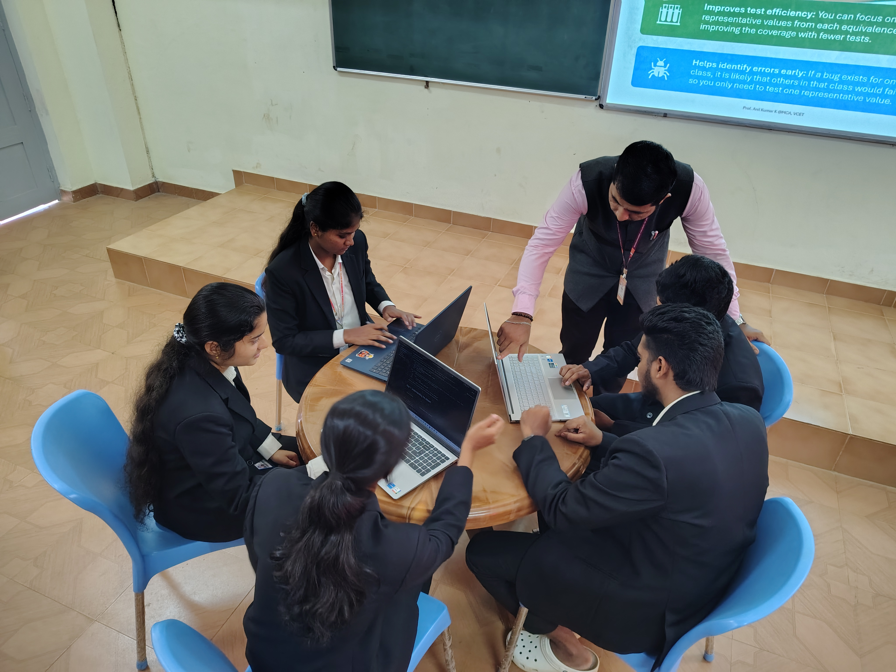
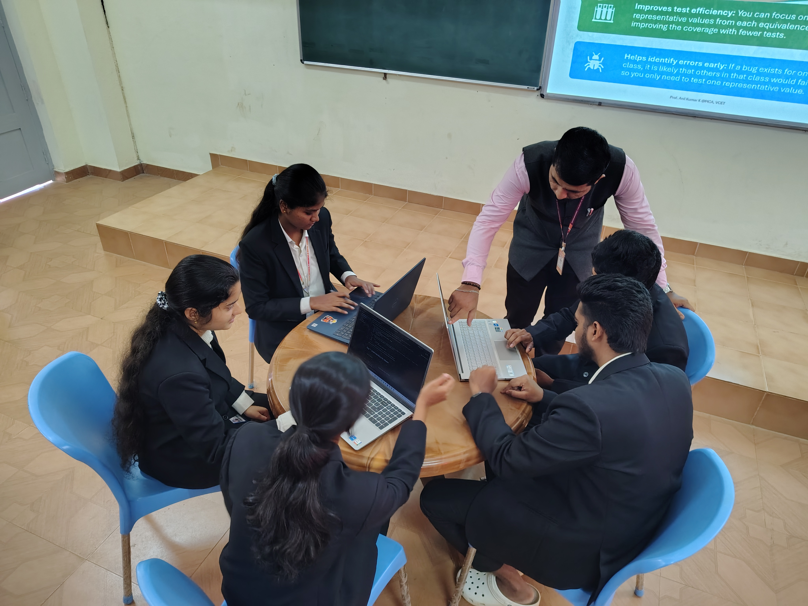

TANTROTSAV
Project Expo 2K25
Organized by Department of Master of Computer Applications
Vivekananda College of Engineering & Technology, Puttur
About the College
Vivekananda College of Engineering and Technology (VCET), Puttur, established in 2001 by Vivekananda Vidyavardhaka Sangha, is a reputed institution dedicated to providing quality technical education, particularly to the rural areas of coastal Karnataka. Recognized as a center of excellence in engineering education, VCET attracts aspiring students from across the country and consistently delivers outstanding academic performances. Spread over 25 acres, the campus is equipped with modern infrastructure, including state-of-the-art laboratories, spacious classrooms, hostels, transportation facilities, and a well-stocked library. The institute offers six undergraduate engineering programs: Artificial Intelligence & Machine Learning, Computer Science & Engineering, Data Science, Electronics and Communication Engineering, Mechanical Engineering, and Civil Engineering. In addition to undergraduate courses, VCET provides postgraduate programs in MBA and MCA. Known for its disciplined and ragging-free environment, VCET has become a hub for quality education in the coastal region of Karnataka. Its commitment to excellence is reflected in its advanced facilities and focus on fostering technical expertise among students.

 


About the Department
The Master of Computer Applications (MCA) programme at Vivekananda College of Engineering & Technology is a vital source of talent for the software industry. It is a two-year postgraduate course approved by the AICTE, Government of Karnataka, and affiliated to Visvesvaraya Technological University (VTU), Belgaum. This programme is designed to equip students with the latest theoretical and practical knowledge in computer applications.
The curriculum covers a wide range of subjects including design and analysis techniques used in software development, internal operations of computers and networks, and hands-on training in application domains. Students can choose electives in specialized areas such as Rich Internet Applications, Mobile Computing, Advanced Computer Networks, Graphics, Unix System Programming, Artificial Intelligence, and more. Admission requires a degree in B.C.A., B.Sc., B.Com., or B.A. with Mathematics as a subject in 10+2 or at the graduate level.
The department focuses on holistic student development through Career Essential Soft Skills Programs, placement support with job portals, hiring drives, resume building, and guidance from dedicated mentors. Students benefit from live coding classes, profile-building workshops, industry expert mentorship, and real-world case studies and projects.
Career opportunities for MCA graduates include roles such as Software Developer, Hardware Engineer, Cloud Architect, Data Scientist, Business Analyst, Web Developer, IT Architect, Software Consultant, Social Media Manager, Ethical Hacker, and Quality Assurance Analyst.
Core subjects include Data Structures with Algorithms, Operating Systems with Unix, Computer Networks, Database Management Systems, Object-Oriented Programming with Java, Web Technology, IoT, Data Analytics with Python, Software Engineering, and Programming Using C#.
Project Expo 2K25

AI Traffic Control System
AI Traffic Control System
AI Traffic Control System
AI Traffic Control System
AI Traffic Control System
Description: A system that uses AI to monitor and manage traffic signals dynamically based on real-time vehicle density.
Tech Stack: Python, OpenCV, TensorFlow, Flask


GitHub: View Code
AI Traffic Control System
Description: A system that uses AI to monitor and manage traffic signals dynamically based on real-time vehicle density.
Tech Stack: Python, OpenCV, TensorFlow, Flask
GitHub: View Code
AI Traffic Control System
Description: A system that uses AI to monitor and manage traffic signals dynamically based on real-time vehicle density.
Tech Stack: Python, OpenCV, TensorFlow, Flask
GitHub: View Code